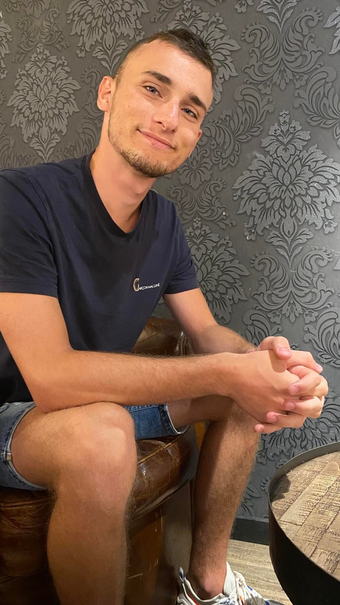
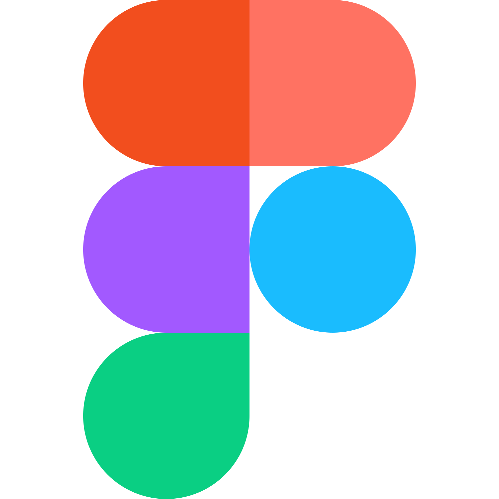

Développeur Web Front-End.
Toujours à la recherche de nouvelles connaissances.
Lucas Gest
Présentation Présentation Présentation Présentation Présentation Présentation Présentation
Salut ! 🥳
Je m'appelle Lucas, j'ai 21 ans et suis développeur Web Front-End.
Je possède un DUT Informatique ainsi qu'une Licence de Développement
Internet et Mobile. Je suis particulièrement assidu et sérieux dans
mon travail. Avant d'intégrer mon DUT, ma curiosité m'a poussé à
regarder les vidéos Youtube de Pierre Giraud.
Alors que je voyais le développement comme quelque chose
d'innaccessible, le DUT m'a permit de comrpendre que ce domaine est
ma passion.
En plus de cette nouvelle passion pour le développement web, je pratique le basket depuis l'âge de 4 ans. Je suis féru de films et séries d'animation japonais ainsi que de la musique. Mes recherches personnelles pour certains langages informatiques m'ont permis de devenir accro au JavaScript, langage que j'ai réussis à comprendre par mes propres moyens.

Compétences Compétences Compétences Compétences Compétences Compétences Compétences
Compétences acquises

Application, intégration des différents langages web existants.
DUT Informatique | 2018 - 2020

Appronfondissement des connaissances et découverte de nouvelles technologies.
Licence de Développement Internet et Mobile | 2022
Détails des compétences.
Tout démarre avec la découverte de l'informatique lorsque je me
baladais sur Internet. Pendant mon année de terminal, j'ai dû
choisir une filière pour mes études supérieurs mais je ne savais pas
ce que je voulais faire et on m'avait parlé du DUT Informatique à
Calais. Mon champs de vision c'est alors ouvert. Avec la rencontre
de nouveaux enseignants et d'autres étudiants, j'avais enfin trouvé
ce que je voulais faire : Dévellopeur Web. Les cours, les recherches
personnelles et les rencontres avec d'autres camarades m'ont permis
de m'améliorer grande vitesse.
Grâce à de nombreux projets, j'ai pu apprendre et améliorer certains
langages web. Aujourd'hui je sais utiliser les langages HTML/CSS,
Javascript et PHP.
Je sais également utiliser les API javascript et étant un fervant
adepte de Discord, je ne pouvais pas passer à côté de la possibilité
de pouvoir développer des "Bots Discord" grâce à discord.js.
De mon côté, je me suis mis à apprendre et à appronfondir mes
connaissances en la matière. J'ai découvert le React.js où, petit à
petit, je commence à comprendre le fonctionnement de ce dernier. Je
suis toujours à l'affut de nouvelles compétences et passe au travers
de mes difficultés.
Compétences


-


-

-

- 